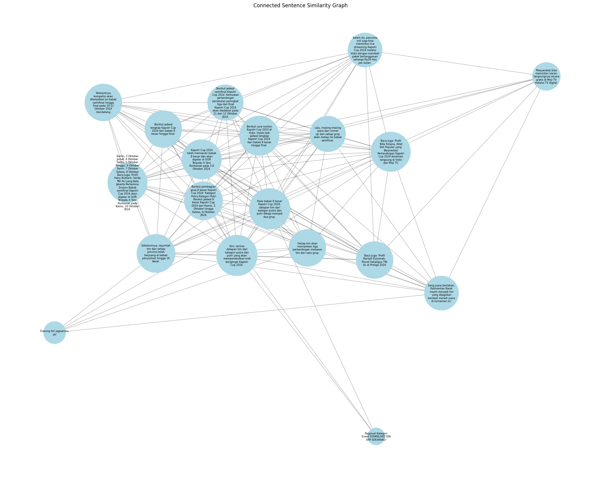

Tugas 4#
Prio Budi Laksono#
210411100177#
PPW A#
import string
import pandas as pd
import numpy as np
Scraping website IDNtimes#
import requests
from bs4 import BeautifulSoup
import csv
# URL dari artikel sepak bola di IDN Times
url = 'https://www.idntimes.com/sport/arena/yogama-wisnu-oktyandito/jadwal-kapolri-cup-2024-babak-8-besar-hingga-final'
# Membuat permintaan ke URL
response = requests.get(url)
# Inisialisasi data yang akan disimpan
# Mengambil ulang dan membersihkan data yang diminta
artikel_mees = []
if response.status_code == 200:
# Parsing halaman web
soup = BeautifulSoup(response.text, 'html.parser')
# Mengambil judul artikel
title = soup.find('h1').get_text().strip()
# Mengambil tanggal publikasi artikel dan membersihkan spasi berlebih
date = soup.find('time').get_text().strip()
# Mengambil isi artikel dengan membersihkan konten tambahan
content = soup.find_all('p')
article_text = '\n'.join([p.get_text().strip() for p in content if p.get_text().strip()])
# Simpan data dalam bentuk dictionary yang telah dibersihkan
artikel_mees.append({
'Title': title,
'Date': date,
'Content': article_text
})
# Membuat dataframe dari data yang telah dibersihkan
data_mees = pd.DataFrame(artikel_mees)
# Menampilkan dataframe yang bersih
data_mees
| Title | Date | Content | |
|---|---|---|---|
| 0 | Jadwal Lengkap Kapolri Cup 2024, Babak 8 Besar... | 10 Oct 24 | 09:52 | Regional\nKategori\nEvent\nDOWNLOAD IDN APP SE... |
Mengukur Kemiripan Antar Teks#
import re
from sklearn.feature_extraction.text import TfidfVectorizer
from sklearn.metrics.pairwise import cosine_similarity
Proses Case Folding#
Mengubah ke huruf kecil semua#
# Proses case folding
def casefolding(Content):
if isinstance(Content, list):
# Jika Content adalah list, terapkan case folding pada setiap elemen
return [str(item).lower() for item in Content]
else:
# Jika Content adalah string, langsung terapkan case folding
return str(Content).lower()
# Terapkan fungsi casefolding pada kolom 'Content'
data_mees['Content'] = data_mees['Content'].apply(casefolding)
data_mees.head()
| Title | Date | Content | |
|---|---|---|---|
| 0 | Jadwal Lengkap Kapolri Cup 2024, Babak 8 Besar... | 10 Oct 24 | 09:52 | regional\nkategori\nevent\ndownload idn app se... |
menyimpan kedalam dataframe ke csv#
csv_filename = "artikel_mees_hilgers.csv"
data_mees.to_csv(csv_filename, index=False, encoding='utf-8')
print(f"Data berita telah disimpan ke {csv_filename}")
Data berita telah disimpan ke artikel_mees_hilgers.csv
data_mees = pd.read_csv("artikel_mees_hilgers.csv", sep=',', encoding='latin1')
data_mees.head()
| Title | Date | Content | |
|---|---|---|---|
| 0 | Jadwal Lengkap Kapolri Cup 2024, Babak 8 Besar... | 10 Oct 24 | 09:52 | regional\nkategori\nevent\ndownload idn app se... |
cleansing content#
def cleansing(Content):
# Menghapus whitespace di awal dan akhir teks
Content = Content.strip()
# Menghapus tanda baca dan karakter khusus
Content = re.sub(f"[{string.punctuation}]", '', Content)
# Menghapus angka
Content = re.sub(r'\d+', '', Content)
# Menghapus huruf tunggal (opsional, tergantung kebutuhan)
Content = re.sub(r"\b[a-zA-Z]\b", "", Content)
# Menghapus karakter-karakter non-standar seperti â
Content = re.sub(r'[^\x00-\x7F]+', '', Content)
# Menghapus spasi ganda
Content = re.sub(r'\s+', ' ', Content)
return Content
# Terapkan fungsi cleansing pada kolom 'Content'
data_mees['Content'] = data_mees['Content'].apply(cleansing)
# Menampilkan 5 baris pertama
data_mees.head(5)
| Title | Date | Content | |
|---|---|---|---|
| 0 | Jadwal Lengkap Kapolri Cup 2024, Babak 8 Besar... | 10 Oct 24 | 09:52 | regional kategori event download idn app sekar... |
import nltk
nltk.download('punkt')
[nltk_data] Downloading package punkt to /root/nltk_data...
[nltk_data] Package punkt is already up-to-date!
True
Tokenisasi#
import nltk
from nltk.tokenize import sent_tokenize, word_tokenize
import pandas as pd # Ensure you import pandas for DataFrame usage
# Download required resources
nltk.download('punkt')
nltk.download('punkt_tab')
# Assume article_text is defined; replace with your actual text
# article_text = "Your article text goes here."
# Ekstraksi kalimat dari konten artikel
sentences = sent_tokenize(article_text)
# Tokenisasi tiap kalimat menjadi term
terms_per_sentence = [word_tokenize(sentence) for sentence in sentences]
# Membuat objek yang menyimpan hasil term dari setiap kalimat
extracted_terms = [{'Sentence': sentence, 'Terms': terms} for sentence, terms in zip(sentences, terms_per_sentence)]
# Menampilkan hasilnya sebagai dataframe
df_terms = pd.DataFrame(extracted_terms)
# Menampilkan dataframe
print(df_terms)
Sentence \
0 Regional\nKategori\nEvent\nDOWNLOAD IDN APP SE...
1 Kapolri Cup 2024 telah memasuki babak 8 besar ...
2 Selanjutnya, kompetisi akan dilanjutkan ke bab...
3 Sebelumnya, sejumlah tim dari setiap provinsi ...
4 Kini, tersisa delapan tim dari kategori putra ...
5 Sang juara bertahan, Kalimantan Barat masih me...
6 Berikut jadwal lengkap Kapolri Cup 2024 dari b...
7 Pada babak 8 besar Kapolri Cup 2024, delapan t...
8 Setiap tim akan memainkan tiga pertandingan me...
9 Lalu, masing-masing juara dan runner up dari s...
10 Berikut pembagian grup 8 besar Kapolri Cup 202...
11 Kamis, 3 Oktober\nJumat, 4 Oktober\nSabtu, 5 O...
12 Berikut jadwal semifinal Kapolri Cup 2024:\nKe...
13 Baca Juga: Profil Yolla Yuliana, Atlet Voli Po...
14 Masyarakat bisa menonton siaran langsungnya se...
15 Selain itu, pencinta voli juga bisa menonton l...
16 Berikut cara nonton Kapolri Cup 2024 di Vidio:...
17 Dukung tim jagoanmu, ya!
18 Baca Juga: Profil Nurlaili Kusumah, Pevoli Sek...
Terms
0 [Regional, Kategori, Event, DOWNLOAD, IDN, APP...
1 [Kapolri, Cup, 2024, telah, memasuki, babak, 8...
2 [Selanjutnya, ,, kompetisi, akan, dilanjutkan,...
3 [Sebelumnya, ,, sejumlah, tim, dari, setiap, p...
4 [Kini, ,, tersisa, delapan, tim, dari, kategor...
5 [Sang, juara, bertahan, ,, Kalimantan, Barat, ...
6 [Berikut, jadwal, lengkap, Kapolri, Cup, 2024,...
7 [Pada, babak, 8, besar, Kapolri, Cup, 2024, ,,...
8 [Setiap, tim, akan, memainkan, tiga, pertandin...
9 [Lalu, ,, masing-masing, juara, dan, runner, u...
10 [Berikut, pembagian, grup, 8, besar, Kapolri, ...
11 [Kamis, ,, 3, Oktober, Jumat, ,, 4, Oktober, S...
12 [Berikut, jadwal, semifinal, Kapolri, Cup, 202...
13 [Baca, Juga, :, Profil, Yolla, Yuliana, ,, Atl...
14 [Masyarakat, bisa, menonton, siaran, langsungn...
15 [Selain, itu, ,, pencinta, voli, juga, bisa, m...
16 [Berikut, cara, nonton, Kapolri, Cup, 2024, di...
17 [Dukung, tim, jagoanmu, ,, ya, !]
18 [Baca, Juga, :, Profil, Nurlaili, Kusumah, ,, ...
[nltk_data] Downloading package punkt to /root/nltk_data...
[nltk_data] Package punkt is already up-to-date!
[nltk_data] Downloading package punkt_tab to /root/nltk_data...
[nltk_data] Package punkt_tab is already up-to-date!
menyimpan DataFrame df_terms ke dalam file CSV bernama “artikel_mees_hilgers_ekstract_term.csv” tanpa menyertakan indeks baris, dan menggunakan encoding UTF-8.#
csv_filename = "artikel_mees_hilgers_ekstract_term.csv"
df_terms.to_csv(csv_filename, index=False, encoding='utf-8')
print(f"Data berita telah disimpan ke {csv_filename}")
Data berita telah disimpan ke artikel_mees_hilgers_ekstract_term.csv
menghitung dan menampilkan TF-IDF#
import pandas as pd
from sklearn.feature_extraction.text import TfidfVectorizer
from nltk.tokenize import sent_tokenize, word_tokenize
# Assuming we have the article_text
sentences = sent_tokenize(article_text)
terms_per_sentence = [word_tokenize(sentence) for sentence in sentences]
extracted_terms = [{'Sentence': sentence, 'Terms': terms} for sentence, terms in zip(sentences, terms_per_sentence)]
df_terms = pd.DataFrame(extracted_terms)
# Menggabungkan terms menjadi string untuk setiap kalimat
df_terms['Terms_String'] = df_terms['Terms'].apply(' '.join)
# Membuat TF-IDF Vectorizer
tfidf_vectorizer = TfidfVectorizer()
# Fit dan transform data
tfidf_matrix = tfidf_vectorizer.fit_transform(df_terms['Terms_String'])
# Mendapatkan nama-nama feature (terms)
feature_names = tfidf_vectorizer.get_feature_names_out()
# Membuat DataFrame untuk nilai TF-IDF
tfidf_df = pd.DataFrame(tfidf_matrix.toarray(), columns=feature_names)
# Menambahkan kolom Sentence
tfidf_df['Sentence'] = df_terms['Sentence']
# Melelehkan (melting) DataFrame untuk format yang lebih mudah dibaca
melted_tfidf = tfidf_df.melt(id_vars=['Sentence'], var_name='Term', value_name='TF-IDF')
# Menghapus baris dengan nilai TF-IDF 0
melted_tfidf = melted_tfidf[melted_tfidf['TF-IDF'] != 0]
# Mengurutkan berdasarkan nilai TF-IDF tertinggi
melted_tfidf = melted_tfidf.sort_values('TF-IDF', ascending=False)
# Menampilkan hasil
print(melted_tfidf)
Sentence Term TF-IDF
1759 Kamis, 3 Oktober\nJumat, 4 Oktober\nSabtu, 5 O... oktober 0.671017
1434 Lalu, masing-masing juara dan runner up dari s... masing 0.565176
777 Dukung tim jagoanmu, ya! dukung 0.543508
2791 Dukung tim jagoanmu, ya! ya 0.543508
1043 Dukung tim jagoanmu, ya! jagoanmu 0.543508
... ... ... ...
106 Kamis, 3 Oktober\nJumat, 4 Oktober\nSabtu, 5 O... akan 0.083347
201 Kamis, 3 Oktober\nJumat, 4 Oktober\nSabtu, 5 O... babak 0.078224
581 Kamis, 3 Oktober\nJumat, 4 Oktober\nSabtu, 5 O... di 0.078224
1170 Kamis, 3 Oktober\nJumat, 4 Oktober\nSabtu, 5 O... kapolri 0.069496
486 Kamis, 3 Oktober\nJumat, 4 Oktober\nSabtu, 5 O... cup 0.069496
[295 rows x 3 columns]
menghitung kemiripan antar kalimat berdasarkan cosine similarity dari vektor TF-IDF setiap kalimat dalam artikel#
import numpy as np
import pandas as pd
from scipy.spatial.distance import cosine
# Assuming we have the melted_tfidf DataFrame from the previous code
# If not, uncomment and run the previous code to get melted_tfidf
# Step 1: Pivot the melted DataFrame back to wide format
tfidf_wide = melted_tfidf.pivot(index='Sentence', columns='Term', values='TF-IDF').fillna(0)
# Step 2: Calculate cosine similarity between sentences
num_sentences = len(tfidf_wide)
adjacency_matrix = np.zeros((num_sentences, num_sentences))
for i in range(num_sentences):
for j in range(i, num_sentences): # We only need to calculate upper triangle
if i == j:
adjacency_matrix[i][j] = 1.0 # Sentence is fully similar to itself
else:
similarity = 1 - cosine(tfidf_wide.iloc[i], tfidf_wide.iloc[j])
adjacency_matrix[i][j] = similarity
adjacency_matrix[j][i] = similarity # Matrix is symmetric
# Create a DataFrame for better visualization
adjacency_df = pd.DataFrame(adjacency_matrix,
index=tfidf_wide.index,
columns=tfidf_wide.index)
# Display the adjacency matrix
print("Adjacency Matrix:")
print(adjacency_df)
# Optional: You can set a threshold to consider only strong connections
threshold = 0.05
adjacency_df_thresholded = adjacency_df.where(adjacency_df > threshold, 0)
print("\nAdjacency Matrix (with threshold):")
print(adjacency_df_thresholded)
# Optional: Save to CSV
adjacency_df.to_csv('adjacency_matrix.csv')
adjacency_df_thresholded.to_csv('adjacency_matrix_thresholded.csv')
Adjacency Matrix:
Sentence Baca Juga: Profil Nurlaili Kusumah, Pevoli Sekaligus TNI AL di Proliga 2024 \
Sentence
Baca Juga: Profil Nurlaili Kusumah, Pevoli Seka... 1.000000
Baca Juga: Profil Yolla Yuliana, Atlet Voli Pop... 0.199281
Berikut cara nonton Kapolri Cup 2024 di Vidio:\... 0.066529
Berikut jadwal lengkap Kapolri Cup 2024 dari ba... 0.029734
Berikut jadwal semifinal Kapolri Cup 2024:\nKem... 0.047483
Berikut pembagian grup 8 besar Kapolri Cup 2024... 0.045956
Dukung tim jagoanmu, ya! 0.000000
Kamis, 3 Oktober\nJumat, 4 Oktober\nSabtu, 5 Ok... 0.153591
Kapolri Cup 2024 telah memasuki babak 8 besar d... 0.072851
Kini, tersisa delapan tim dari kategori putra d... 0.019638
Lalu, masing-masing juara dan runner up dari se... 0.000000
Masyarakat bisa menonton siaran langsungnya sec... 0.027975
Pada babak 8 besar Kapolri Cup 2024, delapan ti... 0.021204
Regional\nKategori\nEvent\nDOWNLOAD IDN APP SEK... 0.000000
Sang juara bertahan, Kalimantan Barat masih men... 0.025446
Sebelumnya, sejumlah tim dari setiap provinsi t... 0.032030
Selain itu, pencinta voli juga bisa menonton li... 0.054376
Selanjutnya, kompetisi akan dilanjutkan ke baba... 0.020260
Setiap tim akan memainkan tiga pertandingan mel... 0.000000
Sentence Baca Juga: Profil Yolla Yuliana, Atlet Voli Populer yang Berprestasi\nPertandingan Kapolri Cup 2024 disiarkan langsung di Vidio dan Moji TV. \
Sentence
Baca Juga: Profil Nurlaili Kusumah, Pevoli Seka... 0.199281
Baca Juga: Profil Yolla Yuliana, Atlet Voli Pop... 1.000000
Berikut cara nonton Kapolri Cup 2024 di Vidio:\... 0.176293
Berikut jadwal lengkap Kapolri Cup 2024 dari ba... 0.082864
Berikut jadwal semifinal Kapolri Cup 2024:\nKem... 0.194650
Berikut pembagian grup 8 besar Kapolri Cup 2024... 0.097600
Dukung tim jagoanmu, ya! 0.000000
Kamis, 3 Oktober\nJumat, 4 Oktober\nSabtu, 5 Ok... 0.130913
Kapolri Cup 2024 telah memasuki babak 8 besar d... 0.131893
Kini, tersisa delapan tim dari kategori putra d... 0.130443
Lalu, masing-masing juara dan runner up dari se... 0.028902
Masyarakat bisa menonton siaran langsungnya sec... 0.195995
Pada babak 8 besar Kapolri Cup 2024, delapan ti... 0.093804
Regional\nKategori\nEvent\nDOWNLOAD IDN APP SEK... 0.000000
Sang juara bertahan, Kalimantan Barat masih men... 0.056021
Sebelumnya, sejumlah tim dari setiap provinsi t... 0.025546
Selain itu, pencinta voli juga bisa menonton li... 0.157134
Selanjutnya, kompetisi akan dilanjutkan ke baba... 0.016159
Setiap tim akan memainkan tiga pertandingan mel... 0.059674
Sentence Berikut cara nonton Kapolri Cup 2024 di Vidio:\nItulah tadi jadwal lengkap Kapolri Cup 2024 dari babak 8 besar hingga final. \
Sentence
Baca Juga: Profil Nurlaili Kusumah, Pevoli Seka... 0.066529
Baca Juga: Profil Yolla Yuliana, Atlet Voli Pop... 0.176293
Berikut cara nonton Kapolri Cup 2024 di Vidio:\... 1.000000
Berikut jadwal lengkap Kapolri Cup 2024 dari ba... 0.717821
Berikut jadwal semifinal Kapolri Cup 2024:\nKem... 0.343970
Berikut pembagian grup 8 besar Kapolri Cup 2024... 0.443201
Dukung tim jagoanmu, ya! 0.000000
Kamis, 3 Oktober\nJumat, 4 Oktober\nSabtu, 5 Ok... 0.097419
Kapolri Cup 2024 telah memasuki babak 8 besar d... 0.258206
Kini, tersisa delapan tim dari kategori putra d... 0.150353
Lalu, masing-masing juara dan runner up dari se... 0.049853
Masyarakat bisa menonton siaran langsungnya sec... 0.024996
Pada babak 8 besar Kapolri Cup 2024, delapan ti... 0.231168
Regional\nKategori\nEvent\nDOWNLOAD IDN APP SEK... 0.000000
Sang juara bertahan, Kalimantan Barat masih men... 0.022736
Sebelumnya, sejumlah tim dari setiap provinsi t... 0.166013
Selain itu, pencinta voli juga bisa menonton li... 0.132521
Selanjutnya, kompetisi akan dilanjutkan ke baba... 0.158119
Setiap tim akan memainkan tiga pertandingan mel... 0.031758
Sentence Berikut jadwal lengkap Kapolri Cup 2024 dari babak 8 besar hingga final. \
Sentence
Baca Juga: Profil Nurlaili Kusumah, Pevoli Seka... 0.029734
Baca Juga: Profil Yolla Yuliana, Atlet Voli Pop... 0.082864
Berikut cara nonton Kapolri Cup 2024 di Vidio:\... 0.717821
Berikut jadwal lengkap Kapolri Cup 2024 dari ba... 1.000000
Berikut jadwal semifinal Kapolri Cup 2024:\nKem... 0.369597
Berikut pembagian grup 8 besar Kapolri Cup 2024... 0.534182
Dukung tim jagoanmu, ya! 0.000000
Kamis, 3 Oktober\nJumat, 4 Oktober\nSabtu, 5 Ok... 0.077937
Kapolri Cup 2024 telah memasuki babak 8 besar d... 0.236425
Kini, tersisa delapan tim dari kategori putra d... 0.142466
Lalu, masing-masing juara dan runner up dari se... 0.079766
Masyarakat bisa menonton siaran langsungnya sec... 0.000000
Pada babak 8 besar Kapolri Cup 2024, delapan ti... 0.263948
Regional\nKategori\nEvent\nDOWNLOAD IDN APP SEK... 0.000000
Sang juara bertahan, Kalimantan Barat masih men... 0.000000
Sebelumnya, sejumlah tim dari setiap provinsi t... 0.219834
Selain itu, pencinta voli juga bisa menonton li... 0.071831
Selanjutnya, kompetisi akan dilanjutkan ke baba... 0.224031
Setiap tim akan memainkan tiga pertandingan mel... 0.050814
Sentence Berikut jadwal semifinal Kapolri Cup 2024:\nKemudian pertandingan perebutan peringkat tiga dan final Kapolri Cup 2024 akan diadakan pada 11 dan 12 Oktober 2024. \
Sentence
Baca Juga: Profil Nurlaili Kusumah, Pevoli Seka... 0.047483
Baca Juga: Profil Yolla Yuliana, Atlet Voli Pop... 0.194650
Berikut cara nonton Kapolri Cup 2024 di Vidio:\... 0.343970
Berikut jadwal lengkap Kapolri Cup 2024 dari ba... 0.369597
Berikut jadwal semifinal Kapolri Cup 2024:\nKem... 1.000000
Berikut pembagian grup 8 besar Kapolri Cup 2024... 0.373846
Dukung tim jagoanmu, ya! 0.000000
Kamis, 3 Oktober\nJumat, 4 Oktober\nSabtu, 5 Ok... 0.235950
Kapolri Cup 2024 telah memasuki babak 8 besar d... 0.335012
Kini, tersisa delapan tim dari kategori putra d... 0.207550
Lalu, masing-masing juara dan runner up dari se... 0.116634
Masyarakat bisa menonton siaran langsungnya sec... 0.000000
Pada babak 8 besar Kapolri Cup 2024, delapan ti... 0.233446
Regional\nKategori\nEvent\nDOWNLOAD IDN APP SEK... 0.000000
Sang juara bertahan, Kalimantan Barat masih men... 0.000000
Sebelumnya, sejumlah tim dari setiap provinsi t... 0.000000
Selain itu, pencinta voli juga bisa menonton li... 0.087417
Selanjutnya, kompetisi akan dilanjutkan ke baba... 0.296080
Setiap tim akan memainkan tiga pertandingan mel... 0.157838
Sentence Berikut pembagian grup 8 besar Kapolri Cup 2024:\nKategori Putra\nKategori Putri\nBerikut jadwal 8 besar Kapolri Cup 2024 dari Kamis, 3 Oktober hingga Selasa, 8 Oktober 2024. \
Sentence
Baca Juga: Profil Nurlaili Kusumah, Pevoli Seka... 0.045956
Baca Juga: Profil Yolla Yuliana, Atlet Voli Pop... 0.097600
Berikut cara nonton Kapolri Cup 2024 di Vidio:\... 0.443201
Berikut jadwal lengkap Kapolri Cup 2024 dari ba... 0.534182
Berikut jadwal semifinal Kapolri Cup 2024:\nKem... 0.373846
Berikut pembagian grup 8 besar Kapolri Cup 2024... 1.000000
Dukung tim jagoanmu, ya! 0.000000
Kamis, 3 Oktober\nJumat, 4 Oktober\nSabtu, 5 Ok... 0.373532
Kapolri Cup 2024 telah memasuki babak 8 besar d... 0.297352
Kini, tersisa delapan tim dari kategori putra d... 0.315100
Lalu, masing-masing juara dan runner up dari se... 0.056721
Masyarakat bisa menonton siaran langsungnya sec... 0.000000
Pada babak 8 besar Kapolri Cup 2024, delapan ti... 0.447786
Regional\nKategori\nEvent\nDOWNLOAD IDN APP SEK... 0.100247
Sang juara bertahan, Kalimantan Barat masih men... 0.000000
Sebelumnya, sejumlah tim dari setiap provinsi t... 0.120312
Selain itu, pencinta voli juga bisa menonton li... 0.084606
Selanjutnya, kompetisi akan dilanjutkan ke baba... 0.150996
Setiap tim akan memainkan tiga pertandingan mel... 0.072267
Sentence Dukung tim jagoanmu, ya! \
Sentence
Baca Juga: Profil Nurlaili Kusumah, Pevoli Seka... 0.000000
Baca Juga: Profil Yolla Yuliana, Atlet Voli Pop... 0.000000
Berikut cara nonton Kapolri Cup 2024 di Vidio:\... 0.000000
Berikut jadwal lengkap Kapolri Cup 2024 dari ba... 0.000000
Berikut jadwal semifinal Kapolri Cup 2024:\nKem... 0.000000
Berikut pembagian grup 8 besar Kapolri Cup 2024... 0.000000
Dukung tim jagoanmu, ya! 1.000000
Kamis, 3 Oktober\nJumat, 4 Oktober\nSabtu, 5 Ok... 0.000000
Kapolri Cup 2024 telah memasuki babak 8 besar d... 0.000000
Kini, tersisa delapan tim dari kategori putra d... 0.065811
Lalu, masing-masing juara dan runner up dari se... 0.000000
Masyarakat bisa menonton siaran langsungnya sec... 0.000000
Pada babak 8 besar Kapolri Cup 2024, delapan ti... 0.071060
Regional\nKategori\nEvent\nDOWNLOAD IDN APP SEK... 0.000000
Sang juara bertahan, Kalimantan Barat masih men... 0.053968
Sebelumnya, sejumlah tim dari setiap provinsi t... 0.067933
Selain itu, pencinta voli juga bisa menonton li... 0.000000
Selanjutnya, kompetisi akan dilanjutkan ke baba... 0.000000
Setiap tim akan memainkan tiga pertandingan mel... 0.150768
Sentence Kamis, 3 Oktober\nJumat, 4 Oktober\nSabtu, 5 Oktober\nMinggu, 6 Oktober\nSenin, 7 Oktober\nSelasa, 8 Oktober\nBaca Juga: Profil Hany Budiarti, Serda TNI AU yang Bela Jakarta Pertamina Enduro\nBabak semifinal Kapolri Cup 2024 akan digelar di GOR Terpadu A Yani, Pontianak pada Kamis, 10 Oktober 2024. \
Sentence
Baca Juga: Profil Nurlaili Kusumah, Pevoli Seka... 0.153591
Baca Juga: Profil Yolla Yuliana, Atlet Voli Pop... 0.130913
Berikut cara nonton Kapolri Cup 2024 di Vidio:\... 0.097419
Berikut jadwal lengkap Kapolri Cup 2024 dari ba... 0.077937
Berikut jadwal semifinal Kapolri Cup 2024:\nKem... 0.235950
Berikut pembagian grup 8 besar Kapolri Cup 2024... 0.373532
Dukung tim jagoanmu, ya! 0.000000
Kamis, 3 Oktober\nJumat, 4 Oktober\nSabtu, 5 Ok... 1.000000
Kapolri Cup 2024 telah memasuki babak 8 besar d... 0.447215
Kini, tersisa delapan tim dari kategori putra d... 0.076858
Lalu, masing-masing juara dan runner up dari se... 0.046897
Masyarakat bisa menonton siaran langsungnya sec... 0.012072
Pada babak 8 besar Kapolri Cup 2024, delapan ti... 0.077291
Regional\nKategori\nEvent\nDOWNLOAD IDN APP SEK... 0.000000
Sang juara bertahan, Kalimantan Barat masih men... 0.030310
Sebelumnya, sejumlah tim dari setiap provinsi t... 0.027643
Selain itu, pencinta voli juga bisa menonton li... 0.045145
Selanjutnya, kompetisi akan dilanjutkan ke baba... 0.273101
Setiap tim akan memainkan tiga pertandingan mel... 0.017412
Sentence Kapolri Cup 2024 telah memasuki babak 8 besar dan akan digelar di GOR Terpadu A Yani, Pontianak pada 3-8 Oktober 2024. \
Sentence
Baca Juga: Profil Nurlaili Kusumah, Pevoli Seka... 0.072851
Baca Juga: Profil Yolla Yuliana, Atlet Voli Pop... 0.131893
Berikut cara nonton Kapolri Cup 2024 di Vidio:\... 0.258206
Berikut jadwal lengkap Kapolri Cup 2024 dari ba... 0.236425
Berikut jadwal semifinal Kapolri Cup 2024:\nKem... 0.335012
Berikut pembagian grup 8 besar Kapolri Cup 2024... 0.297352
Dukung tim jagoanmu, ya! 0.000000
Kamis, 3 Oktober\nJumat, 4 Oktober\nSabtu, 5 Ok... 0.447215
Kapolri Cup 2024 telah memasuki babak 8 besar d... 1.000000
Kini, tersisa delapan tim dari kategori putra d... 0.160258
Lalu, masing-masing juara dan runner up dari se... 0.093738
Masyarakat bisa menonton siaran langsungnya sec... 0.027371
Pada babak 8 besar Kapolri Cup 2024, delapan ti... 0.260415
Regional\nKategori\nEvent\nDOWNLOAD IDN APP SEK... 0.000000
Sang juara bertahan, Kalimantan Barat masih men... 0.024896
Sebelumnya, sejumlah tim dari setiap provinsi t... 0.184705
Selain itu, pencinta voli juga bisa menonton li... 0.063228
Selanjutnya, kompetisi akan dilanjutkan ke baba... 0.200598
Setiap tim akan memainkan tiga pertandingan mel... 0.039480
Sentence Kini, tersisa delapan tim dari kategori putra dan putri yang akan memperebutkan trofi bergengsi Kapolri Cup 2024. \
Sentence
Baca Juga: Profil Nurlaili Kusumah, Pevoli Seka... 0.019638
Baca Juga: Profil Yolla Yuliana, Atlet Voli Pop... 0.130443
Berikut cara nonton Kapolri Cup 2024 di Vidio:\... 0.150353
Berikut jadwal lengkap Kapolri Cup 2024 dari ba... 0.142466
Berikut jadwal semifinal Kapolri Cup 2024:\nKem... 0.207550
Berikut pembagian grup 8 besar Kapolri Cup 2024... 0.315100
Dukung tim jagoanmu, ya! 0.065811
Kamis, 3 Oktober\nJumat, 4 Oktober\nSabtu, 5 Ok... 0.076858
Kapolri Cup 2024 telah memasuki babak 8 besar d... 0.160258
Kini, tersisa delapan tim dari kategori putra d... 1.000000
Lalu, masing-masing juara dan runner up dari se... 0.090464
Masyarakat bisa menonton siaran langsungnya sec... 0.000000
Pada babak 8 besar Kapolri Cup 2024, delapan ti... 0.454765
Regional\nKategori\nEvent\nDOWNLOAD IDN APP SEK... 0.064257
Sang juara bertahan, Kalimantan Barat masih men... 0.073509
Sebelumnya, sejumlah tim dari setiap provinsi t... 0.069531
Selain itu, pencinta voli juga bisa menonton li... 0.047442
Selanjutnya, kompetisi akan dilanjutkan ke baba... 0.053447
Setiap tim akan memainkan tiga pertandingan mel... 0.158854
Sentence Lalu, masing-masing juara dan runner up dari setiap grup akan melaju ke babak semifinal. \
Sentence
Baca Juga: Profil Nurlaili Kusumah, Pevoli Seka... 0.000000
Baca Juga: Profil Yolla Yuliana, Atlet Voli Pop... 0.028902
Berikut cara nonton Kapolri Cup 2024 di Vidio:\... 0.049853
Berikut jadwal lengkap Kapolri Cup 2024 dari ba... 0.079766
Berikut jadwal semifinal Kapolri Cup 2024:\nKem... 0.116634
Berikut pembagian grup 8 besar Kapolri Cup 2024... 0.056721
Dukung tim jagoanmu, ya! 0.000000
Kamis, 3 Oktober\nJumat, 4 Oktober\nSabtu, 5 Ok... 0.046897
Kapolri Cup 2024 telah memasuki babak 8 besar d... 0.093738
Kini, tersisa delapan tim dari kategori putra d... 0.090464
Lalu, masing-masing juara dan runner up dari se... 1.000000
Masyarakat bisa menonton siaran langsungnya sec... 0.000000
Pada babak 8 besar Kapolri Cup 2024, delapan ti... 0.143902
Regional\nKategori\nEvent\nDOWNLOAD IDN APP SEK... 0.000000
Sang juara bertahan, Kalimantan Barat masih men... 0.112103
Sebelumnya, sejumlah tim dari setiap provinsi t... 0.111621
Selain itu, pencinta voli juga bisa menonton li... 0.000000
Selanjutnya, kompetisi akan dilanjutkan ke baba... 0.176387
Setiap tim akan memainkan tiga pertandingan mel... 0.181063
Sentence Masyarakat bisa menonton siaran langsungnya secara gratis di Moji TV melalui TV digital. \
Sentence
Baca Juga: Profil Nurlaili Kusumah, Pevoli Seka... 0.027975
Baca Juga: Profil Yolla Yuliana, Atlet Voli Pop... 0.195995
Berikut cara nonton Kapolri Cup 2024 di Vidio:\... 0.024996
Berikut jadwal lengkap Kapolri Cup 2024 dari ba... 0.000000
Berikut jadwal semifinal Kapolri Cup 2024:\nKem... 0.000000
Berikut pembagian grup 8 besar Kapolri Cup 2024... 0.000000
Dukung tim jagoanmu, ya! 0.000000
Kamis, 3 Oktober\nJumat, 4 Oktober\nSabtu, 5 Ok... 0.012072
Kapolri Cup 2024 telah memasuki babak 8 besar d... 0.027371
Kini, tersisa delapan tim dari kategori putra d... 0.000000
Lalu, masing-masing juara dan runner up dari se... 0.000000
Masyarakat bisa menonton siaran langsungnya sec... 1.000000
Pada babak 8 besar Kapolri Cup 2024, delapan ti... 0.000000
Regional\nKategori\nEvent\nDOWNLOAD IDN APP SEK... 0.000000
Sang juara bertahan, Kalimantan Barat masih men... 0.021662
Sebelumnya, sejumlah tim dari setiap provinsi t... 0.027267
Selain itu, pencinta voli juga bisa menonton li... 0.150559
Selanjutnya, kompetisi akan dilanjutkan ke baba... 0.000000
Setiap tim akan memainkan tiga pertandingan mel... 0.000000
Sentence Pada babak 8 besar Kapolri Cup 2024, delapan tim dari kategori putra dan putri dibagi menjadi dua grup. \
Sentence
Baca Juga: Profil Nurlaili Kusumah, Pevoli Seka... 0.021204
Baca Juga: Profil Yolla Yuliana, Atlet Voli Pop... 0.093804
Berikut cara nonton Kapolri Cup 2024 di Vidio:\... 0.231168
Berikut jadwal lengkap Kapolri Cup 2024 dari ba... 0.263948
Berikut jadwal semifinal Kapolri Cup 2024:\nKem... 0.233446
Berikut pembagian grup 8 besar Kapolri Cup 2024... 0.447786
Dukung tim jagoanmu, ya! 0.071060
Kamis, 3 Oktober\nJumat, 4 Oktober\nSabtu, 5 Ok... 0.077291
Kapolri Cup 2024 telah memasuki babak 8 besar d... 0.260415
Kini, tersisa delapan tim dari kategori putra d... 0.454765
Lalu, masing-masing juara dan runner up dari se... 0.143902
Masyarakat bisa menonton siaran langsungnya sec... 0.000000
Pada babak 8 besar Kapolri Cup 2024, delapan ti... 1.000000
Regional\nKategori\nEvent\nDOWNLOAD IDN APP SEK... 0.069381
Sang juara bertahan, Kalimantan Barat masih men... 0.101018
Sebelumnya, sejumlah tim dari setiap provinsi t... 0.150153
Selain itu, pencinta voli juga bisa menonton li... 0.051226
Selanjutnya, kompetisi akan dilanjutkan ke baba... 0.102308
Setiap tim akan memainkan tiga pertandingan mel... 0.194178
Sentence Regional\nKategori\nEvent\nDOWNLOAD IDN APP SEKARANG! \
Sentence
Baca Juga: Profil Nurlaili Kusumah, Pevoli Seka... 0.000000
Baca Juga: Profil Yolla Yuliana, Atlet Voli Pop... 0.000000
Berikut cara nonton Kapolri Cup 2024 di Vidio:\... 0.000000
Berikut jadwal lengkap Kapolri Cup 2024 dari ba... 0.000000
Berikut jadwal semifinal Kapolri Cup 2024:\nKem... 0.000000
Berikut pembagian grup 8 besar Kapolri Cup 2024... 0.100247
Dukung tim jagoanmu, ya! 0.000000
Kamis, 3 Oktober\nJumat, 4 Oktober\nSabtu, 5 Ok... 0.000000
Kapolri Cup 2024 telah memasuki babak 8 besar d... 0.000000
Kini, tersisa delapan tim dari kategori putra d... 0.064257
Lalu, masing-masing juara dan runner up dari se... 0.000000
Masyarakat bisa menonton siaran langsungnya sec... 0.000000
Pada babak 8 besar Kapolri Cup 2024, delapan ti... 0.069381
Regional\nKategori\nEvent\nDOWNLOAD IDN APP SEK... 1.000000
Sang juara bertahan, Kalimantan Barat masih men... 0.000000
Sebelumnya, sejumlah tim dari setiap provinsi t... 0.000000
Selain itu, pencinta voli juga bisa menonton li... 0.000000
Selanjutnya, kompetisi akan dilanjutkan ke baba... 0.000000
Setiap tim akan memainkan tiga pertandingan mel... 0.000000
Sentence Sang juara bertahan, Kalimantan Barat masih menjadi tim yang dijagokan kembali meraih juara di turnamen ini. \
Sentence
Baca Juga: Profil Nurlaili Kusumah, Pevoli Seka... 0.025446
Baca Juga: Profil Yolla Yuliana, Atlet Voli Pop... 0.056021
Berikut cara nonton Kapolri Cup 2024 di Vidio:\... 0.022736
Berikut jadwal lengkap Kapolri Cup 2024 dari ba... 0.000000
Berikut jadwal semifinal Kapolri Cup 2024:\nKem... 0.000000
Berikut pembagian grup 8 besar Kapolri Cup 2024... 0.000000
Dukung tim jagoanmu, ya! 0.053968
Kamis, 3 Oktober\nJumat, 4 Oktober\nSabtu, 5 Ok... 0.030310
Kapolri Cup 2024 telah memasuki babak 8 besar d... 0.024896
Kini, tersisa delapan tim dari kategori putra d... 0.073509
Lalu, masing-masing juara dan runner up dari se... 0.112103
Masyarakat bisa menonton siaran langsungnya sec... 0.021662
Pada babak 8 besar Kapolri Cup 2024, delapan ti... 0.101018
Regional\nKategori\nEvent\nDOWNLOAD IDN APP SEK... 0.000000
Sang juara bertahan, Kalimantan Barat masih men... 1.000000
Sebelumnya, sejumlah tim dari setiap provinsi t... 0.057019
Selain itu, pencinta voli juga bisa menonton li... 0.000000
Selanjutnya, kompetisi akan dilanjutkan ke baba... 0.000000
Setiap tim akan memainkan tiga pertandingan mel... 0.071501
Sentence Sebelumnya, sejumlah tim dari setiap provinsi telah berjuang di babak penyisihan hingga 16 besar. \
Sentence
Baca Juga: Profil Nurlaili Kusumah, Pevoli Seka... 0.032030
Baca Juga: Profil Yolla Yuliana, Atlet Voli Pop... 0.025546
Berikut cara nonton Kapolri Cup 2024 di Vidio:\... 0.166013
Berikut jadwal lengkap Kapolri Cup 2024 dari ba... 0.219834
Berikut jadwal semifinal Kapolri Cup 2024:\nKem... 0.000000
Berikut pembagian grup 8 besar Kapolri Cup 2024... 0.120312
Dukung tim jagoanmu, ya! 0.067933
Kamis, 3 Oktober\nJumat, 4 Oktober\nSabtu, 5 Ok... 0.027643
Kapolri Cup 2024 telah memasuki babak 8 besar d... 0.184705
Kini, tersisa delapan tim dari kategori putra d... 0.069531
Lalu, masing-masing juara dan runner up dari se... 0.111621
Masyarakat bisa menonton siaran langsungnya sec... 0.027267
Pada babak 8 besar Kapolri Cup 2024, delapan ti... 0.150153
Regional\nKategori\nEvent\nDOWNLOAD IDN APP SEK... 0.000000
Sang juara bertahan, Kalimantan Barat masih men... 0.057019
Sebelumnya, sejumlah tim dari setiap provinsi t... 1.000000
Selain itu, pencinta voli juga bisa menonton li... 0.000000
Selanjutnya, kompetisi akan dilanjutkan ke baba... 0.078059
Setiap tim akan memainkan tiga pertandingan mel... 0.197574
Sentence Selain itu, pencinta voli juga bisa menonton live streaming Kapolri Cup 2024 melalui Vidio dengan membeli paket berlangganan seharga Rp39 ribu per bulan. \
Sentence
Baca Juga: Profil Nurlaili Kusumah, Pevoli Seka... 0.054376
Baca Juga: Profil Yolla Yuliana, Atlet Voli Pop... 0.157134
Berikut cara nonton Kapolri Cup 2024 di Vidio:\... 0.132521
Berikut jadwal lengkap Kapolri Cup 2024 dari ba... 0.071831
Berikut jadwal semifinal Kapolri Cup 2024:\nKem... 0.087417
Berikut pembagian grup 8 besar Kapolri Cup 2024... 0.084606
Dukung tim jagoanmu, ya! 0.000000
Kamis, 3 Oktober\nJumat, 4 Oktober\nSabtu, 5 Ok... 0.045145
Kapolri Cup 2024 telah memasuki babak 8 besar d... 0.063228
Kini, tersisa delapan tim dari kategori putra d... 0.047442
Lalu, masing-masing juara dan runner up dari se... 0.000000
Masyarakat bisa menonton siaran langsungnya sec... 0.150559
Pada babak 8 besar Kapolri Cup 2024, delapan ti... 0.051226
Regional\nKategori\nEvent\nDOWNLOAD IDN APP SEK... 0.000000
Sang juara bertahan, Kalimantan Barat masih men... 0.000000
Sebelumnya, sejumlah tim dari setiap provinsi t... 0.000000
Selain itu, pencinta voli juga bisa menonton li... 1.000000
Selanjutnya, kompetisi akan dilanjutkan ke baba... 0.014007
Setiap tim akan memainkan tiga pertandingan mel... 0.000000
Sentence Selanjutnya, kompetisi akan dilanjutkan ke babak semifinal hingga final pada 10-12 Oktober 2024 mendatang. \
Sentence
Baca Juga: Profil Nurlaili Kusumah, Pevoli Seka... 0.020260
Baca Juga: Profil Yolla Yuliana, Atlet Voli Pop... 0.016159
Berikut cara nonton Kapolri Cup 2024 di Vidio:\... 0.158119
Berikut jadwal lengkap Kapolri Cup 2024 dari ba... 0.224031
Berikut jadwal semifinal Kapolri Cup 2024:\nKem... 0.296080
Berikut pembagian grup 8 besar Kapolri Cup 2024... 0.150996
Dukung tim jagoanmu, ya! 0.000000
Kamis, 3 Oktober\nJumat, 4 Oktober\nSabtu, 5 Ok... 0.273101
Kapolri Cup 2024 telah memasuki babak 8 besar d... 0.200598
Kini, tersisa delapan tim dari kategori putra d... 0.053447
Lalu, masing-masing juara dan runner up dari se... 0.176387
Masyarakat bisa menonton siaran langsungnya sec... 0.000000
Pada babak 8 besar Kapolri Cup 2024, delapan ti... 0.102308
Regional\nKategori\nEvent\nDOWNLOAD IDN APP SEK... 0.000000
Sang juara bertahan, Kalimantan Barat masih men... 0.000000
Sebelumnya, sejumlah tim dari setiap provinsi t... 0.078059
Selain itu, pencinta voli juga bisa menonton li... 0.014007
Selanjutnya, kompetisi akan dilanjutkan ke baba... 1.000000
Setiap tim akan memainkan tiga pertandingan mel... 0.039308
Sentence Setiap tim akan memainkan tiga pertandingan melawan tim dari satu grup.
Sentence
Baca Juga: Profil Nurlaili Kusumah, Pevoli Seka... 0.000000
Baca Juga: Profil Yolla Yuliana, Atlet Voli Pop... 0.059674
Berikut cara nonton Kapolri Cup 2024 di Vidio:\... 0.031758
Berikut jadwal lengkap Kapolri Cup 2024 dari ba... 0.050814
Berikut jadwal semifinal Kapolri Cup 2024:\nKem... 0.157838
Berikut pembagian grup 8 besar Kapolri Cup 2024... 0.072267
Dukung tim jagoanmu, ya! 0.150768
Kamis, 3 Oktober\nJumat, 4 Oktober\nSabtu, 5 Ok... 0.017412
Kapolri Cup 2024 telah memasuki babak 8 besar d... 0.039480
Kini, tersisa delapan tim dari kategori putra d... 0.158854
Lalu, masing-masing juara dan runner up dari se... 0.181063
Masyarakat bisa menonton siaran langsungnya sec... 0.000000
Pada babak 8 besar Kapolri Cup 2024, delapan ti... 0.194178
Regional\nKategori\nEvent\nDOWNLOAD IDN APP SEK... 0.000000
Sang juara bertahan, Kalimantan Barat masih men... 0.071501
Sebelumnya, sejumlah tim dari setiap provinsi t... 0.197574
Selain itu, pencinta voli juga bisa menonton li... 0.000000
Selanjutnya, kompetisi akan dilanjutkan ke baba... 0.039308
Setiap tim akan memainkan tiga pertandingan mel... 1.000000
Adjacency Matrix (with threshold):
Sentence Baca Juga: Profil Nurlaili Kusumah, Pevoli Sekaligus TNI AL di Proliga 2024 \
Sentence
Baca Juga: Profil Nurlaili Kusumah, Pevoli Seka... 1.000000
Baca Juga: Profil Yolla Yuliana, Atlet Voli Pop... 0.199281
Berikut cara nonton Kapolri Cup 2024 di Vidio:\... 0.066529
Berikut jadwal lengkap Kapolri Cup 2024 dari ba... 0.000000
Berikut jadwal semifinal Kapolri Cup 2024:\nKem... 0.000000
Berikut pembagian grup 8 besar Kapolri Cup 2024... 0.000000
Dukung tim jagoanmu, ya! 0.000000
Kamis, 3 Oktober\nJumat, 4 Oktober\nSabtu, 5 Ok... 0.153591
Kapolri Cup 2024 telah memasuki babak 8 besar d... 0.072851
Kini, tersisa delapan tim dari kategori putra d... 0.000000
Lalu, masing-masing juara dan runner up dari se... 0.000000
Masyarakat bisa menonton siaran langsungnya sec... 0.000000
Pada babak 8 besar Kapolri Cup 2024, delapan ti... 0.000000
Regional\nKategori\nEvent\nDOWNLOAD IDN APP SEK... 0.000000
Sang juara bertahan, Kalimantan Barat masih men... 0.000000
Sebelumnya, sejumlah tim dari setiap provinsi t... 0.000000
Selain itu, pencinta voli juga bisa menonton li... 0.054376
Selanjutnya, kompetisi akan dilanjutkan ke baba... 0.000000
Setiap tim akan memainkan tiga pertandingan mel... 0.000000
Sentence Baca Juga: Profil Yolla Yuliana, Atlet Voli Populer yang Berprestasi\nPertandingan Kapolri Cup 2024 disiarkan langsung di Vidio dan Moji TV. \
Sentence
Baca Juga: Profil Nurlaili Kusumah, Pevoli Seka... 0.199281
Baca Juga: Profil Yolla Yuliana, Atlet Voli Pop... 1.000000
Berikut cara nonton Kapolri Cup 2024 di Vidio:\... 0.176293
Berikut jadwal lengkap Kapolri Cup 2024 dari ba... 0.082864
Berikut jadwal semifinal Kapolri Cup 2024:\nKem... 0.194650
Berikut pembagian grup 8 besar Kapolri Cup 2024... 0.097600
Dukung tim jagoanmu, ya! 0.000000
Kamis, 3 Oktober\nJumat, 4 Oktober\nSabtu, 5 Ok... 0.130913
Kapolri Cup 2024 telah memasuki babak 8 besar d... 0.131893
Kini, tersisa delapan tim dari kategori putra d... 0.130443
Lalu, masing-masing juara dan runner up dari se... 0.000000
Masyarakat bisa menonton siaran langsungnya sec... 0.195995
Pada babak 8 besar Kapolri Cup 2024, delapan ti... 0.093804
Regional\nKategori\nEvent\nDOWNLOAD IDN APP SEK... 0.000000
Sang juara bertahan, Kalimantan Barat masih men... 0.056021
Sebelumnya, sejumlah tim dari setiap provinsi t... 0.000000
Selain itu, pencinta voli juga bisa menonton li... 0.157134
Selanjutnya, kompetisi akan dilanjutkan ke baba... 0.000000
Setiap tim akan memainkan tiga pertandingan mel... 0.059674
Sentence Berikut cara nonton Kapolri Cup 2024 di Vidio:\nItulah tadi jadwal lengkap Kapolri Cup 2024 dari babak 8 besar hingga final. \
Sentence
Baca Juga: Profil Nurlaili Kusumah, Pevoli Seka... 0.066529
Baca Juga: Profil Yolla Yuliana, Atlet Voli Pop... 0.176293
Berikut cara nonton Kapolri Cup 2024 di Vidio:\... 1.000000
Berikut jadwal lengkap Kapolri Cup 2024 dari ba... 0.717821
Berikut jadwal semifinal Kapolri Cup 2024:\nKem... 0.343970
Berikut pembagian grup 8 besar Kapolri Cup 2024... 0.443201
Dukung tim jagoanmu, ya! 0.000000
Kamis, 3 Oktober\nJumat, 4 Oktober\nSabtu, 5 Ok... 0.097419
Kapolri Cup 2024 telah memasuki babak 8 besar d... 0.258206
Kini, tersisa delapan tim dari kategori putra d... 0.150353
Lalu, masing-masing juara dan runner up dari se... 0.000000
Masyarakat bisa menonton siaran langsungnya sec... 0.000000
Pada babak 8 besar Kapolri Cup 2024, delapan ti... 0.231168
Regional\nKategori\nEvent\nDOWNLOAD IDN APP SEK... 0.000000
Sang juara bertahan, Kalimantan Barat masih men... 0.000000
Sebelumnya, sejumlah tim dari setiap provinsi t... 0.166013
Selain itu, pencinta voli juga bisa menonton li... 0.132521
Selanjutnya, kompetisi akan dilanjutkan ke baba... 0.158119
Setiap tim akan memainkan tiga pertandingan mel... 0.000000
Sentence Berikut jadwal lengkap Kapolri Cup 2024 dari babak 8 besar hingga final. \
Sentence
Baca Juga: Profil Nurlaili Kusumah, Pevoli Seka... 0.000000
Baca Juga: Profil Yolla Yuliana, Atlet Voli Pop... 0.082864
Berikut cara nonton Kapolri Cup 2024 di Vidio:\... 0.717821
Berikut jadwal lengkap Kapolri Cup 2024 dari ba... 1.000000
Berikut jadwal semifinal Kapolri Cup 2024:\nKem... 0.369597
Berikut pembagian grup 8 besar Kapolri Cup 2024... 0.534182
Dukung tim jagoanmu, ya! 0.000000
Kamis, 3 Oktober\nJumat, 4 Oktober\nSabtu, 5 Ok... 0.077937
Kapolri Cup 2024 telah memasuki babak 8 besar d... 0.236425
Kini, tersisa delapan tim dari kategori putra d... 0.142466
Lalu, masing-masing juara dan runner up dari se... 0.079766
Masyarakat bisa menonton siaran langsungnya sec... 0.000000
Pada babak 8 besar Kapolri Cup 2024, delapan ti... 0.263948
Regional\nKategori\nEvent\nDOWNLOAD IDN APP SEK... 0.000000
Sang juara bertahan, Kalimantan Barat masih men... 0.000000
Sebelumnya, sejumlah tim dari setiap provinsi t... 0.219834
Selain itu, pencinta voli juga bisa menonton li... 0.071831
Selanjutnya, kompetisi akan dilanjutkan ke baba... 0.224031
Setiap tim akan memainkan tiga pertandingan mel... 0.050814
Sentence Berikut jadwal semifinal Kapolri Cup 2024:\nKemudian pertandingan perebutan peringkat tiga dan final Kapolri Cup 2024 akan diadakan pada 11 dan 12 Oktober 2024. \
Sentence
Baca Juga: Profil Nurlaili Kusumah, Pevoli Seka... 0.000000
Baca Juga: Profil Yolla Yuliana, Atlet Voli Pop... 0.194650
Berikut cara nonton Kapolri Cup 2024 di Vidio:\... 0.343970
Berikut jadwal lengkap Kapolri Cup 2024 dari ba... 0.369597
Berikut jadwal semifinal Kapolri Cup 2024:\nKem... 1.000000
Berikut pembagian grup 8 besar Kapolri Cup 2024... 0.373846
Dukung tim jagoanmu, ya! 0.000000
Kamis, 3 Oktober\nJumat, 4 Oktober\nSabtu, 5 Ok... 0.235950
Kapolri Cup 2024 telah memasuki babak 8 besar d... 0.335012
Kini, tersisa delapan tim dari kategori putra d... 0.207550
Lalu, masing-masing juara dan runner up dari se... 0.116634
Masyarakat bisa menonton siaran langsungnya sec... 0.000000
Pada babak 8 besar Kapolri Cup 2024, delapan ti... 0.233446
Regional\nKategori\nEvent\nDOWNLOAD IDN APP SEK... 0.000000
Sang juara bertahan, Kalimantan Barat masih men... 0.000000
Sebelumnya, sejumlah tim dari setiap provinsi t... 0.000000
Selain itu, pencinta voli juga bisa menonton li... 0.087417
Selanjutnya, kompetisi akan dilanjutkan ke baba... 0.296080
Setiap tim akan memainkan tiga pertandingan mel... 0.157838
Sentence Berikut pembagian grup 8 besar Kapolri Cup 2024:\nKategori Putra\nKategori Putri\nBerikut jadwal 8 besar Kapolri Cup 2024 dari Kamis, 3 Oktober hingga Selasa, 8 Oktober 2024. \
Sentence
Baca Juga: Profil Nurlaili Kusumah, Pevoli Seka... 0.000000
Baca Juga: Profil Yolla Yuliana, Atlet Voli Pop... 0.097600
Berikut cara nonton Kapolri Cup 2024 di Vidio:\... 0.443201
Berikut jadwal lengkap Kapolri Cup 2024 dari ba... 0.534182
Berikut jadwal semifinal Kapolri Cup 2024:\nKem... 0.373846
Berikut pembagian grup 8 besar Kapolri Cup 2024... 1.000000
Dukung tim jagoanmu, ya! 0.000000
Kamis, 3 Oktober\nJumat, 4 Oktober\nSabtu, 5 Ok... 0.373532
Kapolri Cup 2024 telah memasuki babak 8 besar d... 0.297352
Kini, tersisa delapan tim dari kategori putra d... 0.315100
Lalu, masing-masing juara dan runner up dari se... 0.056721
Masyarakat bisa menonton siaran langsungnya sec... 0.000000
Pada babak 8 besar Kapolri Cup 2024, delapan ti... 0.447786
Regional\nKategori\nEvent\nDOWNLOAD IDN APP SEK... 0.100247
Sang juara bertahan, Kalimantan Barat masih men... 0.000000
Sebelumnya, sejumlah tim dari setiap provinsi t... 0.120312
Selain itu, pencinta voli juga bisa menonton li... 0.084606
Selanjutnya, kompetisi akan dilanjutkan ke baba... 0.150996
Setiap tim akan memainkan tiga pertandingan mel... 0.072267
Sentence Dukung tim jagoanmu, ya! \
Sentence
Baca Juga: Profil Nurlaili Kusumah, Pevoli Seka... 0.000000
Baca Juga: Profil Yolla Yuliana, Atlet Voli Pop... 0.000000
Berikut cara nonton Kapolri Cup 2024 di Vidio:\... 0.000000
Berikut jadwal lengkap Kapolri Cup 2024 dari ba... 0.000000
Berikut jadwal semifinal Kapolri Cup 2024:\nKem... 0.000000
Berikut pembagian grup 8 besar Kapolri Cup 2024... 0.000000
Dukung tim jagoanmu, ya! 1.000000
Kamis, 3 Oktober\nJumat, 4 Oktober\nSabtu, 5 Ok... 0.000000
Kapolri Cup 2024 telah memasuki babak 8 besar d... 0.000000
Kini, tersisa delapan tim dari kategori putra d... 0.065811
Lalu, masing-masing juara dan runner up dari se... 0.000000
Masyarakat bisa menonton siaran langsungnya sec... 0.000000
Pada babak 8 besar Kapolri Cup 2024, delapan ti... 0.071060
Regional\nKategori\nEvent\nDOWNLOAD IDN APP SEK... 0.000000
Sang juara bertahan, Kalimantan Barat masih men... 0.053968
Sebelumnya, sejumlah tim dari setiap provinsi t... 0.067933
Selain itu, pencinta voli juga bisa menonton li... 0.000000
Selanjutnya, kompetisi akan dilanjutkan ke baba... 0.000000
Setiap tim akan memainkan tiga pertandingan mel... 0.150768
Sentence Kamis, 3 Oktober\nJumat, 4 Oktober\nSabtu, 5 Oktober\nMinggu, 6 Oktober\nSenin, 7 Oktober\nSelasa, 8 Oktober\nBaca Juga: Profil Hany Budiarti, Serda TNI AU yang Bela Jakarta Pertamina Enduro\nBabak semifinal Kapolri Cup 2024 akan digelar di GOR Terpadu A Yani, Pontianak pada Kamis, 10 Oktober 2024. \
Sentence
Baca Juga: Profil Nurlaili Kusumah, Pevoli Seka... 0.153591
Baca Juga: Profil Yolla Yuliana, Atlet Voli Pop... 0.130913
Berikut cara nonton Kapolri Cup 2024 di Vidio:\... 0.097419
Berikut jadwal lengkap Kapolri Cup 2024 dari ba... 0.077937
Berikut jadwal semifinal Kapolri Cup 2024:\nKem... 0.235950
Berikut pembagian grup 8 besar Kapolri Cup 2024... 0.373532
Dukung tim jagoanmu, ya! 0.000000
Kamis, 3 Oktober\nJumat, 4 Oktober\nSabtu, 5 Ok... 1.000000
Kapolri Cup 2024 telah memasuki babak 8 besar d... 0.447215
Kini, tersisa delapan tim dari kategori putra d... 0.076858
Lalu, masing-masing juara dan runner up dari se... 0.000000
Masyarakat bisa menonton siaran langsungnya sec... 0.000000
Pada babak 8 besar Kapolri Cup 2024, delapan ti... 0.077291
Regional\nKategori\nEvent\nDOWNLOAD IDN APP SEK... 0.000000
Sang juara bertahan, Kalimantan Barat masih men... 0.000000
Sebelumnya, sejumlah tim dari setiap provinsi t... 0.000000
Selain itu, pencinta voli juga bisa menonton li... 0.000000
Selanjutnya, kompetisi akan dilanjutkan ke baba... 0.273101
Setiap tim akan memainkan tiga pertandingan mel... 0.000000
Sentence Kapolri Cup 2024 telah memasuki babak 8 besar dan akan digelar di GOR Terpadu A Yani, Pontianak pada 3-8 Oktober 2024. \
Sentence
Baca Juga: Profil Nurlaili Kusumah, Pevoli Seka... 0.072851
Baca Juga: Profil Yolla Yuliana, Atlet Voli Pop... 0.131893
Berikut cara nonton Kapolri Cup 2024 di Vidio:\... 0.258206
Berikut jadwal lengkap Kapolri Cup 2024 dari ba... 0.236425
Berikut jadwal semifinal Kapolri Cup 2024:\nKem... 0.335012
Berikut pembagian grup 8 besar Kapolri Cup 2024... 0.297352
Dukung tim jagoanmu, ya! 0.000000
Kamis, 3 Oktober\nJumat, 4 Oktober\nSabtu, 5 Ok... 0.447215
Kapolri Cup 2024 telah memasuki babak 8 besar d... 1.000000
Kini, tersisa delapan tim dari kategori putra d... 0.160258
Lalu, masing-masing juara dan runner up dari se... 0.093738
Masyarakat bisa menonton siaran langsungnya sec... 0.000000
Pada babak 8 besar Kapolri Cup 2024, delapan ti... 0.260415
Regional\nKategori\nEvent\nDOWNLOAD IDN APP SEK... 0.000000
Sang juara bertahan, Kalimantan Barat masih men... 0.000000
Sebelumnya, sejumlah tim dari setiap provinsi t... 0.184705
Selain itu, pencinta voli juga bisa menonton li... 0.063228
Selanjutnya, kompetisi akan dilanjutkan ke baba... 0.200598
Setiap tim akan memainkan tiga pertandingan mel... 0.000000
Sentence Kini, tersisa delapan tim dari kategori putra dan putri yang akan memperebutkan trofi bergengsi Kapolri Cup 2024. \
Sentence
Baca Juga: Profil Nurlaili Kusumah, Pevoli Seka... 0.000000
Baca Juga: Profil Yolla Yuliana, Atlet Voli Pop... 0.130443
Berikut cara nonton Kapolri Cup 2024 di Vidio:\... 0.150353
Berikut jadwal lengkap Kapolri Cup 2024 dari ba... 0.142466
Berikut jadwal semifinal Kapolri Cup 2024:\nKem... 0.207550
Berikut pembagian grup 8 besar Kapolri Cup 2024... 0.315100
Dukung tim jagoanmu, ya! 0.065811
Kamis, 3 Oktober\nJumat, 4 Oktober\nSabtu, 5 Ok... 0.076858
Kapolri Cup 2024 telah memasuki babak 8 besar d... 0.160258
Kini, tersisa delapan tim dari kategori putra d... 1.000000
Lalu, masing-masing juara dan runner up dari se... 0.090464
Masyarakat bisa menonton siaran langsungnya sec... 0.000000
Pada babak 8 besar Kapolri Cup 2024, delapan ti... 0.454765
Regional\nKategori\nEvent\nDOWNLOAD IDN APP SEK... 0.064257
Sang juara bertahan, Kalimantan Barat masih men... 0.073509
Sebelumnya, sejumlah tim dari setiap provinsi t... 0.069531
Selain itu, pencinta voli juga bisa menonton li... 0.000000
Selanjutnya, kompetisi akan dilanjutkan ke baba... 0.053447
Setiap tim akan memainkan tiga pertandingan mel... 0.158854
Sentence Lalu, masing-masing juara dan runner up dari setiap grup akan melaju ke babak semifinal. \
Sentence
Baca Juga: Profil Nurlaili Kusumah, Pevoli Seka... 0.000000
Baca Juga: Profil Yolla Yuliana, Atlet Voli Pop... 0.000000
Berikut cara nonton Kapolri Cup 2024 di Vidio:\... 0.000000
Berikut jadwal lengkap Kapolri Cup 2024 dari ba... 0.079766
Berikut jadwal semifinal Kapolri Cup 2024:\nKem... 0.116634
Berikut pembagian grup 8 besar Kapolri Cup 2024... 0.056721
Dukung tim jagoanmu, ya! 0.000000
Kamis, 3 Oktober\nJumat, 4 Oktober\nSabtu, 5 Ok... 0.000000
Kapolri Cup 2024 telah memasuki babak 8 besar d... 0.093738
Kini, tersisa delapan tim dari kategori putra d... 0.090464
Lalu, masing-masing juara dan runner up dari se... 1.000000
Masyarakat bisa menonton siaran langsungnya sec... 0.000000
Pada babak 8 besar Kapolri Cup 2024, delapan ti... 0.143902
Regional\nKategori\nEvent\nDOWNLOAD IDN APP SEK... 0.000000
Sang juara bertahan, Kalimantan Barat masih men... 0.112103
Sebelumnya, sejumlah tim dari setiap provinsi t... 0.111621
Selain itu, pencinta voli juga bisa menonton li... 0.000000
Selanjutnya, kompetisi akan dilanjutkan ke baba... 0.176387
Setiap tim akan memainkan tiga pertandingan mel... 0.181063
Sentence Masyarakat bisa menonton siaran langsungnya secara gratis di Moji TV melalui TV digital. \
Sentence
Baca Juga: Profil Nurlaili Kusumah, Pevoli Seka... 0.000000
Baca Juga: Profil Yolla Yuliana, Atlet Voli Pop... 0.195995
Berikut cara nonton Kapolri Cup 2024 di Vidio:\... 0.000000
Berikut jadwal lengkap Kapolri Cup 2024 dari ba... 0.000000
Berikut jadwal semifinal Kapolri Cup 2024:\nKem... 0.000000
Berikut pembagian grup 8 besar Kapolri Cup 2024... 0.000000
Dukung tim jagoanmu, ya! 0.000000
Kamis, 3 Oktober\nJumat, 4 Oktober\nSabtu, 5 Ok... 0.000000
Kapolri Cup 2024 telah memasuki babak 8 besar d... 0.000000
Kini, tersisa delapan tim dari kategori putra d... 0.000000
Lalu, masing-masing juara dan runner up dari se... 0.000000
Masyarakat bisa menonton siaran langsungnya sec... 1.000000
Pada babak 8 besar Kapolri Cup 2024, delapan ti... 0.000000
Regional\nKategori\nEvent\nDOWNLOAD IDN APP SEK... 0.000000
Sang juara bertahan, Kalimantan Barat masih men... 0.000000
Sebelumnya, sejumlah tim dari setiap provinsi t... 0.000000
Selain itu, pencinta voli juga bisa menonton li... 0.150559
Selanjutnya, kompetisi akan dilanjutkan ke baba... 0.000000
Setiap tim akan memainkan tiga pertandingan mel... 0.000000
Sentence Pada babak 8 besar Kapolri Cup 2024, delapan tim dari kategori putra dan putri dibagi menjadi dua grup. \
Sentence
Baca Juga: Profil Nurlaili Kusumah, Pevoli Seka... 0.000000
Baca Juga: Profil Yolla Yuliana, Atlet Voli Pop... 0.093804
Berikut cara nonton Kapolri Cup 2024 di Vidio:\... 0.231168
Berikut jadwal lengkap Kapolri Cup 2024 dari ba... 0.263948
Berikut jadwal semifinal Kapolri Cup 2024:\nKem... 0.233446
Berikut pembagian grup 8 besar Kapolri Cup 2024... 0.447786
Dukung tim jagoanmu, ya! 0.071060
Kamis, 3 Oktober\nJumat, 4 Oktober\nSabtu, 5 Ok... 0.077291
Kapolri Cup 2024 telah memasuki babak 8 besar d... 0.260415
Kini, tersisa delapan tim dari kategori putra d... 0.454765
Lalu, masing-masing juara dan runner up dari se... 0.143902
Masyarakat bisa menonton siaran langsungnya sec... 0.000000
Pada babak 8 besar Kapolri Cup 2024, delapan ti... 1.000000
Regional\nKategori\nEvent\nDOWNLOAD IDN APP SEK... 0.069381
Sang juara bertahan, Kalimantan Barat masih men... 0.101018
Sebelumnya, sejumlah tim dari setiap provinsi t... 0.150153
Selain itu, pencinta voli juga bisa menonton li... 0.051226
Selanjutnya, kompetisi akan dilanjutkan ke baba... 0.102308
Setiap tim akan memainkan tiga pertandingan mel... 0.194178
Sentence Regional\nKategori\nEvent\nDOWNLOAD IDN APP SEKARANG! \
Sentence
Baca Juga: Profil Nurlaili Kusumah, Pevoli Seka... 0.000000
Baca Juga: Profil Yolla Yuliana, Atlet Voli Pop... 0.000000
Berikut cara nonton Kapolri Cup 2024 di Vidio:\... 0.000000
Berikut jadwal lengkap Kapolri Cup 2024 dari ba... 0.000000
Berikut jadwal semifinal Kapolri Cup 2024:\nKem... 0.000000
Berikut pembagian grup 8 besar Kapolri Cup 2024... 0.100247
Dukung tim jagoanmu, ya! 0.000000
Kamis, 3 Oktober\nJumat, 4 Oktober\nSabtu, 5 Ok... 0.000000
Kapolri Cup 2024 telah memasuki babak 8 besar d... 0.000000
Kini, tersisa delapan tim dari kategori putra d... 0.064257
Lalu, masing-masing juara dan runner up dari se... 0.000000
Masyarakat bisa menonton siaran langsungnya sec... 0.000000
Pada babak 8 besar Kapolri Cup 2024, delapan ti... 0.069381
Regional\nKategori\nEvent\nDOWNLOAD IDN APP SEK... 1.000000
Sang juara bertahan, Kalimantan Barat masih men... 0.000000
Sebelumnya, sejumlah tim dari setiap provinsi t... 0.000000
Selain itu, pencinta voli juga bisa menonton li... 0.000000
Selanjutnya, kompetisi akan dilanjutkan ke baba... 0.000000
Setiap tim akan memainkan tiga pertandingan mel... 0.000000
Sentence Sang juara bertahan, Kalimantan Barat masih menjadi tim yang dijagokan kembali meraih juara di turnamen ini. \
Sentence
Baca Juga: Profil Nurlaili Kusumah, Pevoli Seka... 0.000000
Baca Juga: Profil Yolla Yuliana, Atlet Voli Pop... 0.056021
Berikut cara nonton Kapolri Cup 2024 di Vidio:\... 0.000000
Berikut jadwal lengkap Kapolri Cup 2024 dari ba... 0.000000
Berikut jadwal semifinal Kapolri Cup 2024:\nKem... 0.000000
Berikut pembagian grup 8 besar Kapolri Cup 2024... 0.000000
Dukung tim jagoanmu, ya! 0.053968
Kamis, 3 Oktober\nJumat, 4 Oktober\nSabtu, 5 Ok... 0.000000
Kapolri Cup 2024 telah memasuki babak 8 besar d... 0.000000
Kini, tersisa delapan tim dari kategori putra d... 0.073509
Lalu, masing-masing juara dan runner up dari se... 0.112103
Masyarakat bisa menonton siaran langsungnya sec... 0.000000
Pada babak 8 besar Kapolri Cup 2024, delapan ti... 0.101018
Regional\nKategori\nEvent\nDOWNLOAD IDN APP SEK... 0.000000
Sang juara bertahan, Kalimantan Barat masih men... 1.000000
Sebelumnya, sejumlah tim dari setiap provinsi t... 0.057019
Selain itu, pencinta voli juga bisa menonton li... 0.000000
Selanjutnya, kompetisi akan dilanjutkan ke baba... 0.000000
Setiap tim akan memainkan tiga pertandingan mel... 0.071501
Sentence Sebelumnya, sejumlah tim dari setiap provinsi telah berjuang di babak penyisihan hingga 16 besar. \
Sentence
Baca Juga: Profil Nurlaili Kusumah, Pevoli Seka... 0.000000
Baca Juga: Profil Yolla Yuliana, Atlet Voli Pop... 0.000000
Berikut cara nonton Kapolri Cup 2024 di Vidio:\... 0.166013
Berikut jadwal lengkap Kapolri Cup 2024 dari ba... 0.219834
Berikut jadwal semifinal Kapolri Cup 2024:\nKem... 0.000000
Berikut pembagian grup 8 besar Kapolri Cup 2024... 0.120312
Dukung tim jagoanmu, ya! 0.067933
Kamis, 3 Oktober\nJumat, 4 Oktober\nSabtu, 5 Ok... 0.000000
Kapolri Cup 2024 telah memasuki babak 8 besar d... 0.184705
Kini, tersisa delapan tim dari kategori putra d... 0.069531
Lalu, masing-masing juara dan runner up dari se... 0.111621
Masyarakat bisa menonton siaran langsungnya sec... 0.000000
Pada babak 8 besar Kapolri Cup 2024, delapan ti... 0.150153
Regional\nKategori\nEvent\nDOWNLOAD IDN APP SEK... 0.000000
Sang juara bertahan, Kalimantan Barat masih men... 0.057019
Sebelumnya, sejumlah tim dari setiap provinsi t... 1.000000
Selain itu, pencinta voli juga bisa menonton li... 0.000000
Selanjutnya, kompetisi akan dilanjutkan ke baba... 0.078059
Setiap tim akan memainkan tiga pertandingan mel... 0.197574
Sentence Selain itu, pencinta voli juga bisa menonton live streaming Kapolri Cup 2024 melalui Vidio dengan membeli paket berlangganan seharga Rp39 ribu per bulan. \
Sentence
Baca Juga: Profil Nurlaili Kusumah, Pevoli Seka... 0.054376
Baca Juga: Profil Yolla Yuliana, Atlet Voli Pop... 0.157134
Berikut cara nonton Kapolri Cup 2024 di Vidio:\... 0.132521
Berikut jadwal lengkap Kapolri Cup 2024 dari ba... 0.071831
Berikut jadwal semifinal Kapolri Cup 2024:\nKem... 0.087417
Berikut pembagian grup 8 besar Kapolri Cup 2024... 0.084606
Dukung tim jagoanmu, ya! 0.000000
Kamis, 3 Oktober\nJumat, 4 Oktober\nSabtu, 5 Ok... 0.000000
Kapolri Cup 2024 telah memasuki babak 8 besar d... 0.063228
Kini, tersisa delapan tim dari kategori putra d... 0.000000
Lalu, masing-masing juara dan runner up dari se... 0.000000
Masyarakat bisa menonton siaran langsungnya sec... 0.150559
Pada babak 8 besar Kapolri Cup 2024, delapan ti... 0.051226
Regional\nKategori\nEvent\nDOWNLOAD IDN APP SEK... 0.000000
Sang juara bertahan, Kalimantan Barat masih men... 0.000000
Sebelumnya, sejumlah tim dari setiap provinsi t... 0.000000
Selain itu, pencinta voli juga bisa menonton li... 1.000000
Selanjutnya, kompetisi akan dilanjutkan ke baba... 0.000000
Setiap tim akan memainkan tiga pertandingan mel... 0.000000
Sentence Selanjutnya, kompetisi akan dilanjutkan ke babak semifinal hingga final pada 10-12 Oktober 2024 mendatang. \
Sentence
Baca Juga: Profil Nurlaili Kusumah, Pevoli Seka... 0.000000
Baca Juga: Profil Yolla Yuliana, Atlet Voli Pop... 0.000000
Berikut cara nonton Kapolri Cup 2024 di Vidio:\... 0.158119
Berikut jadwal lengkap Kapolri Cup 2024 dari ba... 0.224031
Berikut jadwal semifinal Kapolri Cup 2024:\nKem... 0.296080
Berikut pembagian grup 8 besar Kapolri Cup 2024... 0.150996
Dukung tim jagoanmu, ya! 0.000000
Kamis, 3 Oktober\nJumat, 4 Oktober\nSabtu, 5 Ok... 0.273101
Kapolri Cup 2024 telah memasuki babak 8 besar d... 0.200598
Kini, tersisa delapan tim dari kategori putra d... 0.053447
Lalu, masing-masing juara dan runner up dari se... 0.176387
Masyarakat bisa menonton siaran langsungnya sec... 0.000000
Pada babak 8 besar Kapolri Cup 2024, delapan ti... 0.102308
Regional\nKategori\nEvent\nDOWNLOAD IDN APP SEK... 0.000000
Sang juara bertahan, Kalimantan Barat masih men... 0.000000
Sebelumnya, sejumlah tim dari setiap provinsi t... 0.078059
Selain itu, pencinta voli juga bisa menonton li... 0.000000
Selanjutnya, kompetisi akan dilanjutkan ke baba... 1.000000
Setiap tim akan memainkan tiga pertandingan mel... 0.000000
Sentence Setiap tim akan memainkan tiga pertandingan melawan tim dari satu grup.
Sentence
Baca Juga: Profil Nurlaili Kusumah, Pevoli Seka... 0.000000
Baca Juga: Profil Yolla Yuliana, Atlet Voli Pop... 0.059674
Berikut cara nonton Kapolri Cup 2024 di Vidio:\... 0.000000
Berikut jadwal lengkap Kapolri Cup 2024 dari ba... 0.050814
Berikut jadwal semifinal Kapolri Cup 2024:\nKem... 0.157838
Berikut pembagian grup 8 besar Kapolri Cup 2024... 0.072267
Dukung tim jagoanmu, ya! 0.150768
Kamis, 3 Oktober\nJumat, 4 Oktober\nSabtu, 5 Ok... 0.000000
Kapolri Cup 2024 telah memasuki babak 8 besar d... 0.000000
Kini, tersisa delapan tim dari kategori putra d... 0.158854
Lalu, masing-masing juara dan runner up dari se... 0.181063
Masyarakat bisa menonton siaran langsungnya sec... 0.000000
Pada babak 8 besar Kapolri Cup 2024, delapan ti... 0.194178
Regional\nKategori\nEvent\nDOWNLOAD IDN APP SEK... 0.000000
Sang juara bertahan, Kalimantan Barat masih men... 0.071501
Sebelumnya, sejumlah tim dari setiap provinsi t... 0.197574
Selain itu, pencinta voli juga bisa menonton li... 0.000000
Selanjutnya, kompetisi akan dilanjutkan ke baba... 0.000000
Setiap tim akan memainkan tiga pertandingan mel... 1.000000
membangun dan memvisualisasikan graf kalimat berdasarkan kemiripan (cosine similarity)#
import numpy as np
import pandas as pd
import networkx as nx
import matplotlib.pyplot as plt
from sklearn.metrics.pairwise import cosine_similarity
import textwrap
# Assuming we have the tfidf_wide DataFrame and original sentences from previous steps
# If not, you need to run the TF-IDF calculation code first
# Calculate cosine similarity
cosine_sim = cosine_similarity(tfidf_wide)
# Create a DataFrame for the similarity matrix
similarity_df = pd.DataFrame(cosine_sim, index=tfidf_wide.index, columns=tfidf_wide.index)
# Create a graph from the similarity matrix
G = nx.from_pandas_adjacency(similarity_df)
# Remove self-loops
G.remove_edges_from(nx.selfloop_edges(G))
# Function to get the largest connected component
def get_largest_component(G):
return max(nx.connected_components(G), key=len)
# Ensure the graph is connected
while not nx.is_connected(G):
largest_component = get_largest_component(G)
isolated_nodes = set(G.nodes()) - set(largest_component)
if not isolated_nodes:
break
for node in isolated_nodes:
similarities = [(other_node, similarity_df.loc[node, other_node])
for other_node in largest_component]
most_similar_node = max(similarities, key=lambda x: x[1])[0]
G.add_edge(node, most_similar_node)
# Function to wrap text
def wrap_text(text, width=20):
return '\n'.join(textwrap.wrap(text, width=width))
# Prepare labels (wrapped sentences)
labels = {node: wrap_text(node) for node in G.nodes()}
# Now let's visualize the graph
plt.figure(figsize=(20, 16)) # Increased figure size
pos = nx.spring_layout(G, k=0.5, iterations=50)
# Calculate node sizes based on degree centrality
degree_centrality = nx.degree_centrality(G)
node_sizes = [v * 10000 for v in degree_centrality.values()] # Increased node sizes
# Draw the graph
nx.draw_networkx_nodes(G, pos, node_size=node_sizes, node_color='lightblue')
nx.draw_networkx_edges(G, pos, alpha=0.3)
# Add labels
nx.draw_networkx_labels(G, pos, labels, font_size=6) # Reduced font size
plt.title("Connected Sentence Similarity Graph")
plt.axis('off')
plt.tight_layout()
# Save the graph as an image
plt.savefig('connected_sentence_similarity_graph.png', dpi=300, bbox_inches='tight')
# Show the plot
plt.show()
# Print some information about the graph
print(f"Number of nodes: {G.number_of_nodes()}")
print(f"Number of edges: {G.number_of_edges()}")
print(f"Is the graph connected? {nx.is_connected(G)}")
# Calculate centrality measures
closeness_centrality = nx.closeness_centrality(G)
betweenness_centrality = nx.betweenness_centrality(G)
# Create a DataFrame with centrality measures
centrality_data = []
for node in G.nodes():
centrality_data.append({
'Sentence': node,
'Degree Centrality': degree_centrality[node],
'Closeness Centrality': closeness_centrality[node],
'Betweenness Centrality': betweenness_centrality[node]
})
centrality_df = pd.DataFrame(centrality_data)
# Sort by Degree Centrality
centrality_df = centrality_df.sort_values('Degree Centrality', ascending=False)
print("\nCentrality Measures:")
print(centrality_df)
# Save centrality measures to CSV
centrality_df.to_csv('centrality_measures_with_sentences.csv', index=False)
# Optionally, print the top 5 sentences by each centrality measure
print("\nTop 5 sentences by Degree Centrality:")
print(centrality_df.nlargest(5, 'Degree Centrality')[['Sentence', 'Degree Centrality']])
print("\nTop 5 sentences by Closeness Centrality:")
print(centrality_df.nlargest(5, 'Closeness Centrality')[['Sentence', 'Closeness Centrality']])
print("\nTop 5 sentences by Betweenness Centrality:")
print(centrality_df.nlargest(5, 'Betweenness Centrality')[['Sentence', 'Betweenness Centrality']])

Number of nodes: 19
Number of edges: 125
Is the graph connected? True
Centrality Measures:
Sentence Degree Centrality \
9 Kini, tersisa delapan tim dari kategori putra ... 0.944444
12 Pada babak 8 besar Kapolri Cup 2024, delapan t... 0.944444
1 Baca Juga: Profil Yolla Yuliana, Atlet Voli Po... 0.888889
2 Berikut cara nonton Kapolri Cup 2024 di Vidio:... 0.888889
7 Kamis, 3 Oktober\nJumat, 4 Oktober\nSabtu, 5 O... 0.888889
8 Kapolri Cup 2024 telah memasuki babak 8 besar ... 0.888889
15 Sebelumnya, sejumlah tim dari setiap provinsi ... 0.833333
5 Berikut pembagian grup 8 besar Kapolri Cup 202... 0.833333
17 Selanjutnya, kompetisi akan dilanjutkan ke bab... 0.777778
0 Baca Juga: Profil Nurlaili Kusumah, Pevoli Sek... 0.777778
3 Berikut jadwal lengkap Kapolri Cup 2024 dari b... 0.777778
18 Setiap tim akan memainkan tiga pertandingan me... 0.777778
10 Lalu, masing-masing juara dan runner up dari s... 0.722222
4 Berikut jadwal semifinal Kapolri Cup 2024:\nKe... 0.722222
14 Sang juara bertahan, Kalimantan Barat masih me... 0.666667
16 Selain itu, pencinta voli juga bisa menonton l... 0.666667
11 Masyarakat bisa menonton siaran langsungnya se... 0.444444
6 Dukung tim jagoanmu, ya! 0.277778
13 Regional\nKategori\nEvent\nDOWNLOAD IDN APP SE... 0.166667
Closeness Centrality Betweenness Centrality
9 0.947368 0.060511
12 0.947368 0.060511
1 0.900000 0.015595
2 0.900000 0.015595
7 0.900000 0.015595
8 0.900000 0.015595
15 0.857143 0.026856
5 0.857143 0.031668
17 0.818182 0.003535
0 0.818182 0.011020
3 0.818182 0.003535
18 0.818182 0.016848
10 0.782609 0.003232
4 0.782609 0.002397
14 0.750000 0.016908
16 0.750000 0.006377
11 0.620690 0.001411
6 0.580645 0.000000
13 0.529412 0.000000
Top 5 sentences by Degree Centrality:
Sentence Degree Centrality
9 Kini, tersisa delapan tim dari kategori putra ... 0.944444
12 Pada babak 8 besar Kapolri Cup 2024, delapan t... 0.944444
1 Baca Juga: Profil Yolla Yuliana, Atlet Voli Po... 0.888889
2 Berikut cara nonton Kapolri Cup 2024 di Vidio:... 0.888889
7 Kamis, 3 Oktober\nJumat, 4 Oktober\nSabtu, 5 O... 0.888889
Top 5 sentences by Closeness Centrality:
Sentence Closeness Centrality
9 Kini, tersisa delapan tim dari kategori putra ... 0.947368
12 Pada babak 8 besar Kapolri Cup 2024, delapan t... 0.947368
1 Baca Juga: Profil Yolla Yuliana, Atlet Voli Po... 0.900000
2 Berikut cara nonton Kapolri Cup 2024 di Vidio:... 0.900000
7 Kamis, 3 Oktober\nJumat, 4 Oktober\nSabtu, 5 O... 0.900000
Top 5 sentences by Betweenness Centrality:
Sentence Betweenness Centrality
9 Kini, tersisa delapan tim dari kategori putra ... 0.060511
12 Pada babak 8 besar Kapolri Cup 2024, delapan t... 0.060511
5 Berikut pembagian grup 8 besar Kapolri Cup 202... 0.031668
15 Sebelumnya, sejumlah tim dari setiap provinsi ... 0.026856
14 Sang juara bertahan, Kalimantan Barat masih me... 0.016908